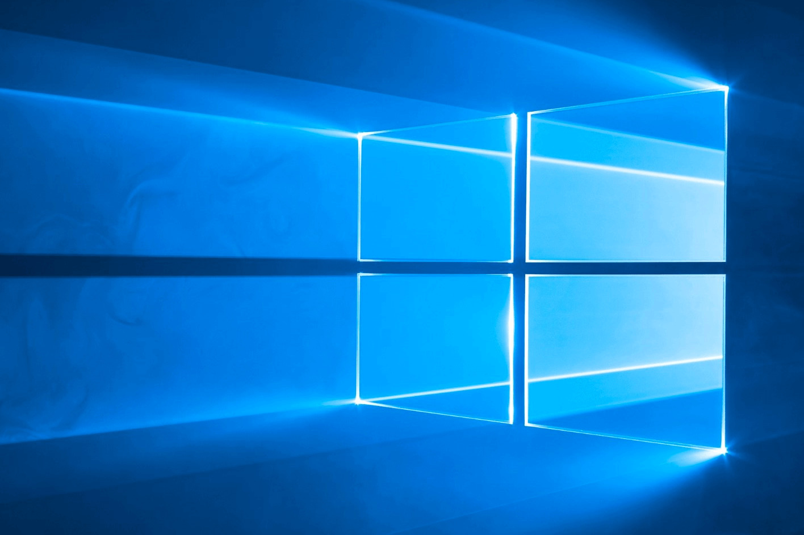
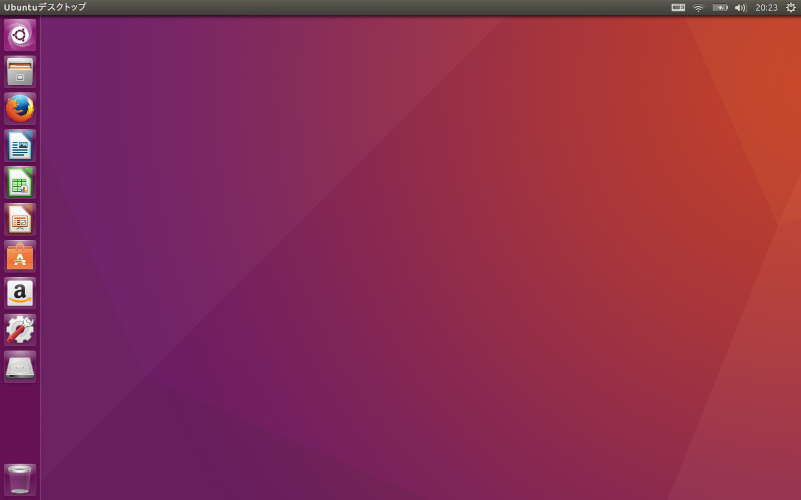

さらばWINSOWS、永遠となれ
注意:デスクトップPCの方はWINDOWSのままです。。。
学生の皆さんは学期が始まり、いろいろな授業の科目登録をし、それらを受けるための準備(教科書を用意したり、専用のノートを用意したり、etc)をしたかと思います。
注意:デスクトップPCの方はWINDOWSのままです。。。
私も情報系の学生の一人であるので、その例に漏れず、科目登録やら色々七めんどくさいことをやりましたよ。。。。
ただ、普通の大学生とちょっと違うことがあるとするならば、私の場合情報系の学生ということもあり、PCのセッティングがあるというところです。
とある必修の授業でプログラミングの授業がありました。よし、春学期も始まるし、頑張るぞ!と意気揚々と初回の授業に行きました。
初回ということもあり、ふむふむなるほど、この授業ではこれこれこういうことをやるのかと説明を受け、そこまでは私のこころも平穏を保っていたのです。
先生が授業で使うPCの環境の話をし始めたかと思うと、全生徒に向け、とある質問をしました。
先生「まぁ、今時いないと思うけど、32bitのOS使ってる人いますか?」
なんでも、プログラムをコンパイルしたときの機械語に関するところも授業の内容にあるので、実行環境を64bitで統一したいとのこと、
まぁね、今時ね、32bitのOSなんか使ってるやつおらへんやろ～
そこで手を上げたのは無情にも私ただ一人でした。。。。。。。。。。。。。。
私のノートパソコンは去年学科に配属された際に中古で安い割にはcpuやメモリの性能が良かったものを選んだため、OSについてはそんなに気にしていませんでした。
そこで、先生に聞いたところ、linuxというOSの64bit版をデュアルブート(一つのPCで2つのOSが起動できるようにすること)しろとのこと、、
私はその日のうちにネットで調べ、デュアルブートをできるようにしました。
ただ、そこで一点取り返しのつかないことをしてしまったのです。
linux側に割り当てるパーティション(ハードディスクとか容量に関わる部分)が小さすぎたのです。
javaのコンパイラと実行環境、texliveをインストールした段階で、linuxが
「容量がねぇ!!!!!」
とかほざきやがりました。
仕方ねーなー、それじゃあlinux側の容量を増やしてやるかぁとネットで調べ始めると、どうやら不可能ではないようだが、ちょっとやり方が理解できない。。。
それじゃあ、一回linuxだけ削除してもう一回パーティション割り当てるかとその線で調べてみても、全くわからない。。。
バイト終わりの深夜疲れた頭で考えていた私は直にイライラし始めました。そして、頭にこういった考えが出てきました。
(領域全てを削除し、最初っからlinuxを入れればいいんじゃ...)
つまり、windowsいらねぇんじゃね?という考えなのですが、確かに考えてみると、私がノートPC使うのにWINDOWSじゃなきゃいけない理由があるかというと、
- ゲーム→デスクトップのPCでやればいい
- microsoft officeによる課題→texliveはあるし、linuxでもそれに変わるものはある
- SNSとか動画とか→linuxでもそんなに変わらん
- プログラミング→それこそlinuxでやれ!!!
大事なデータを別にやって、私はさっさとlinuxの環境構築を始めましたとさ、めでたしめでたし。(本当か?)

↑びふぉー

↑あふたー
それでは、またどこかで!
homeへ
homeへ